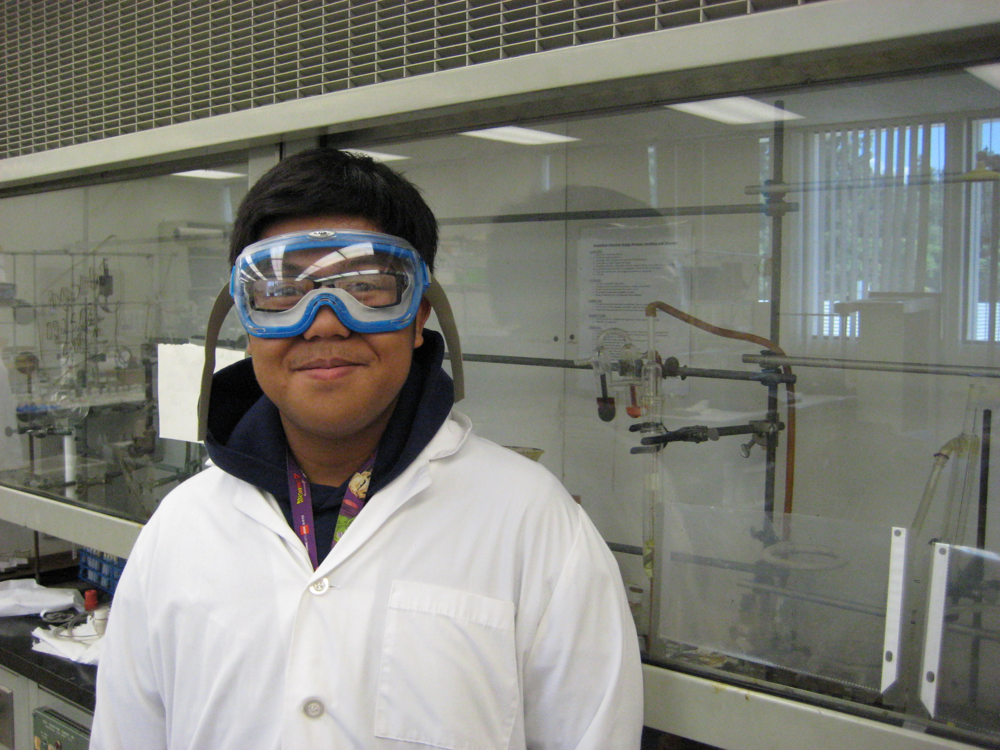

Group Members
Please contact Dr. Stieber if you are interested in conducting research in the group.
Group meetings are typically Tuesdays during lunch.
Current Members (click for group pictures)(click for alumni)

Briana Arreaga is a Chemistry major and RISE and LSAMP Fellow. She joined Aug. 2018 and is making Ni catalysts.

Romualda Aquino is a Master's student and joined the group in Oct. 2021. She is making new ligands.

Nicole Avila is a Chemistry major and joined the group in Feb. 2020. She studies Ni nitrosyls.
Ethan Chavarin is Chemistry major, RIO fellow, and joined the group in Sept. 2021. He is studying Ni NHC complexes.
Caitlyn Cruz is Biology major, RIO fellow, and joined the group in Sept. 2021. She is working on crystallography.

Jessica De la Huerta Joined the group in Oct. 2019. She is studying crystallography.
Carson Gorney is a Chemistry major and joined the group in Sept. 2018. He computes Cu nitrosyl complexes.
Carlos Gutierrez is Master's student and joined the group in Oct. 2021. He work on crystallography.
Mei Matsumoto is Chemistry major and joined the group in Oct. 2020. She is working on crystallography.
Kimberly Olivares is Chemistry major, NSF SPIRES fellow, and joined the group in Sept. 2021. She is working on crystallography.

Isaac Ramirez is a Chemistry major and joined the group in Sept. 2018. He is making Co nitrosyls.

Justin Tabay Cortez, BS in Chemistry at CPP, now doing his teaching credential and MS. He joined March 2016.
Zachary Tam is a Master's student and joined the group in Oct. 2021. He does computational chemistry.